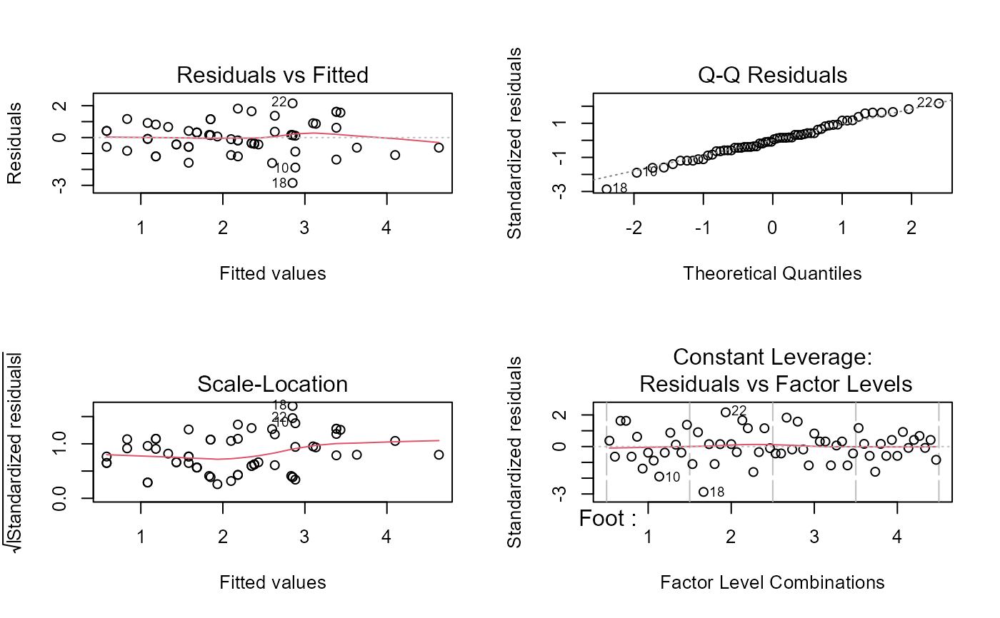
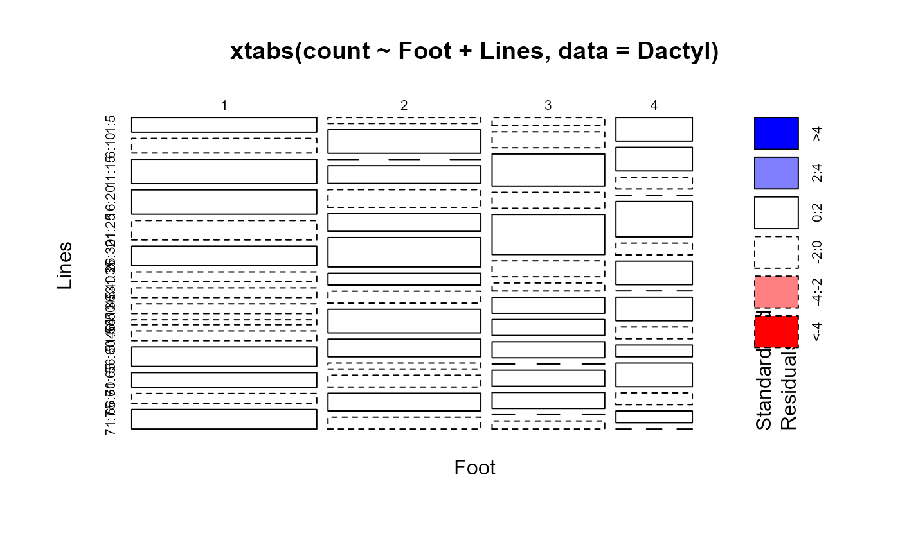

Edgeworth's counts of dactyls in Virgil's Aeneid
Dactyl.RdEdgeworth (1885) took the first 75 lines in Book XI of Virgil's Aeneid and classified each of the first four "feet" of the line as a dactyl (one long syllable followed by two short ones) or not.
Grouping the lines in blocks of five gave a 4 x 25 table of counts,
represented here as a data frame with ordered factors, Foot and
Lines. Edgeworth used this table in what was among the first
examples of analysis of variance applied to a two-way
classification.
Usage
data(Dactyl)Format
A data frame with 60 observations on the following 3 variables.
Footan ordered factor with levels
1<2<3<4Linesan ordered factor with levels
1:5<6:10<11:15<16:20<21:25<26:30<31:35<36:40<41:45<46:50<51:55<56:60<61:65<66:70<71:75countnumber of dactyls
Source
Stigler, S. (1999) Statistics on the Table Cambridge, MA: Harvard University Press, table 5.1.
References
Edgeworth, F. Y. (1885). On methods of ascertaining variations in the rate of births, deaths and marriages. Journal of the [Royal] Statistical Society, 48, 628-649.
Examples
data(Dactyl)
# display the basic table
xtabs(count ~ Foot+Lines, data=Dactyl)
#> Lines
#> Foot 1:5 6:10 11:15 16:20 21:25 26:30 31:35 36:40 41:45 46:50 51:55 56:60 61:65
#> 1 3 3 5 5 4 4 2 2 2 1 2 4 3
#> 2 1 4 0 3 3 3 5 2 2 4 3 1 2
#> 3 1 2 4 2 5 2 1 2 2 2 0 2 2
#> 4 2 2 1 0 3 1 2 0 2 1 1 2 1
#> Lines
#> Foot 66:70 71:75
#> 1 2 4
#> 2 3 2
#> 3 0 1
#> 4 1 0
# simple two-way anova
anova(dact.lm <- lm(count ~ Foot+Lines, data=Dactyl))
#> Analysis of Variance Table
#>
#> Response: count
#> Df Sum Sq Mean Sq F value Pr(>F)
#> Foot 3 27.650 9.2167 6.5499 0.0009826 ***
#> Lines 14 20.233 1.4452 1.0271 0.4467408
#> Residuals 42 59.100 1.4071
#> ---
#> Signif. codes: 0 '***' 0.001 '**' 0.01 '*' 0.05 '.' 0.1 ' ' 1
# plot the lm-quartet
op <- par(mfrow=c(2,2))
plot(dact.lm)

par(op)
# show table as a simple mosaicplot
mosaicplot(xtabs(count ~ Foot+Lines, data=Dactyl), shade=TRUE)
